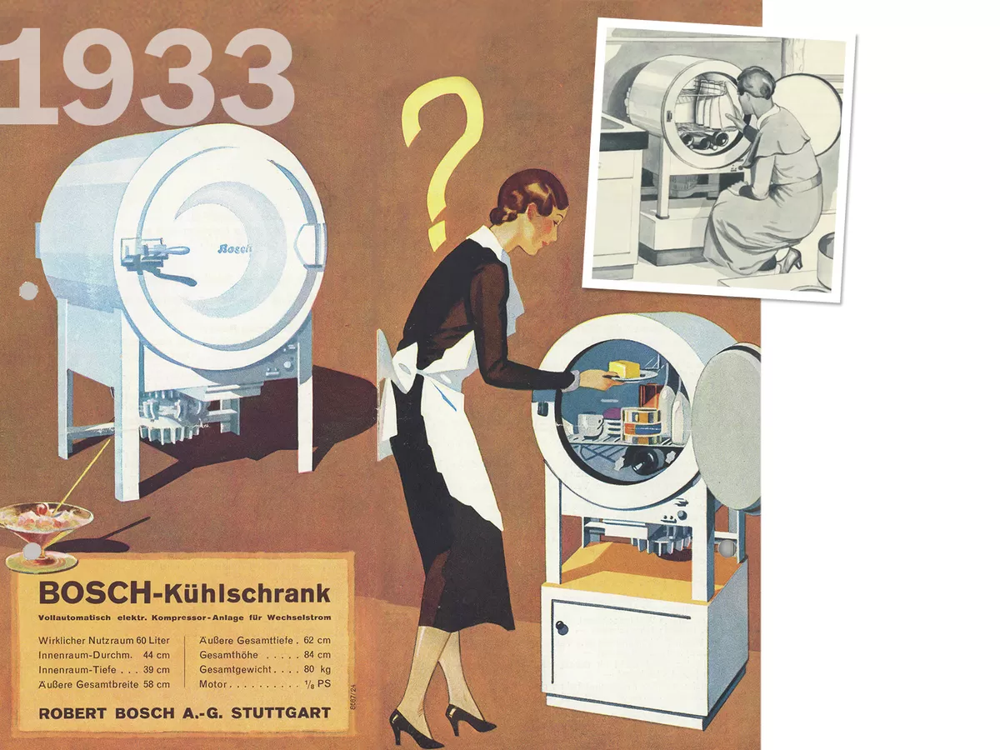

Компания «BOSH» уже более 85 лет является символом передовых технологий, качества и надежности бытовой техники. Цель марки Bosh —
делать повседневную жизнь людей проще и повышать качество жизни – неизменна с момента основания компании Робертом Бошем
(1886 год).
К каждому клиенту мы подходим индивидуально и выбираем оптимальный вариант техники для решения поставленных задач.
Наши специалисты проконсультируют Вас по всем видам техники и подберут оптимальный вариант по вашим хотелкам за бесплатно.
В 1933 году в Германии был представлен первый бытовой прибор Bosh: небольшой круглый холодильник вместимостью всего 60
литров.
Подробнее..
От того, насколько дружественно и качественно Вы пользуетесь техникой, зависит дальнейшая работоспособность Ваших бытовых приборов.

Круглый холодильник
Информация о студенте
Студент, Авдоченко Павел, работает в волейбольном клубе "Шахтер" из города Солигорска. Последняя информация с клубного сайта:
В 8-м туре чемпионата Беларуси по волейболу в высшей лиге солигорский «Шахтер», 14 ноября, победил гомельскую «Энергию» 3:0 (25:15, 25:19, 25:22).Матч был перенесен по просьбе «горняков», которые вернулись из Германии, где проводили встречи Кубка ЕКВ во вторники среду. Сутки на отдых помогли волейболистам «Шахтера» немного восстановиться и подготовиться к игре с «Энергией». Подопечные Виктора Бекши выполнили все установки (стоит отметить: хозяева площадки выступали в том же составе, что и с «Дюреном»). Солигорцы уже на старте матча уверенно сыграли на блоке и повели в счете – 11:4. Это комфортное преимущество они смогли удержать и далее. Успех в матче с «Энергией» позволил «Шахтеру» единолично возглавить турнирную таблицу чемпионата. Произошло это накануне 9-го тура, в котором солигорский клуб примет минский «Строитель».